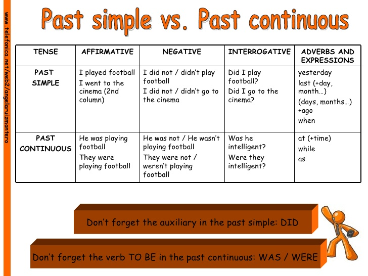
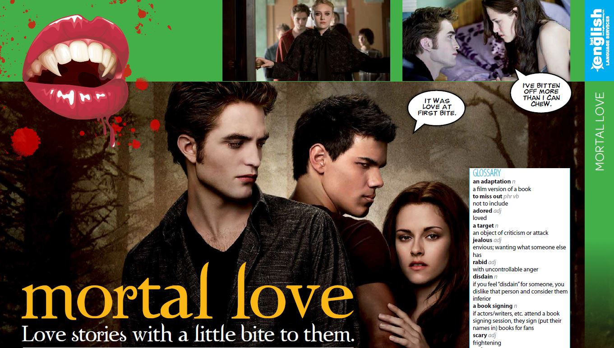
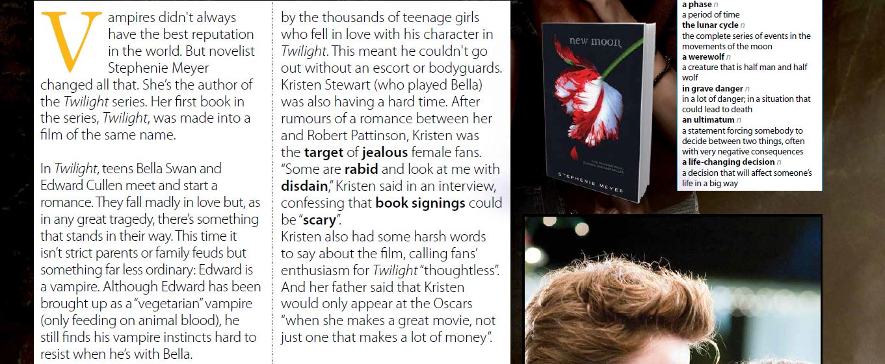
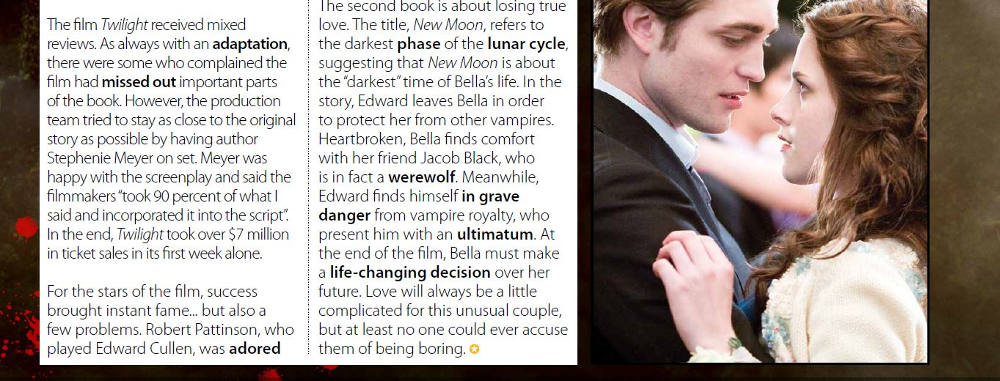

30/10/2021
to watch: Episodes of DariaQuizlet
PAST SIMPLE AND PAST CONTINUOUS FORMS
23/10/2021
to watch: Чудотворцыfill in the gaps in one song:
02/09/2021
to watch: Episodes on HealthQuizlet
Задание по грамматике
В 9 предложениях есть ошибки, их нужно найти
Статья
  26/08/2021
PRESENT SIMPLE


units: Everyday Routine
to watch: Episodes on Everyday life
Quizlet
Задание по грамматике
В 9 предложениях есть ошибки, их нужно найти
Необходимо восстановить вопросы, которые были заданы Пауле